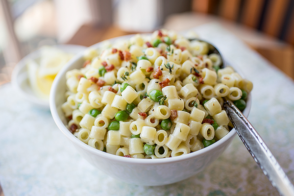

Description
This flavorful macaroni salad is easy to make and is the perfect crowd-pleasing dish to bring to your next picnic or potluck.
Ingredients
- 4 cups uncooked elbow macaroni
- 1 cup mayonaise
- 2/3 cup white sugar
- 1/4 cup distilled white vinegar
- 2 1/2 tablespoons prepared yellow mustard
- 1 1/2 teaspoons salt
- 1 1/2 teaspoons ground black pepper
- 2 stalks celery, chopped
- 1 green bell pepper, seeded and chopped
- 1/4 cup grated carrot (Optional)
- 2 tablespoons chopped pimento peppers
Steps
- Bring a large pot of lightly salted water to a boil. Cook elbow macaroni in the boiling water, stirring
occasionally, until tender yet firm to the bite, about 8 minutes. Rinse under Cold Water and drain.
- Mix mayonaise, sugar, vinegar, mustard, salt, pepper, and macaroni together in a large bowl.
- Stir in celery, onion, green pepper, carrot, and pimentos.
- Refrigerate salad for at least 4 hours before serving, but preferably overnight.